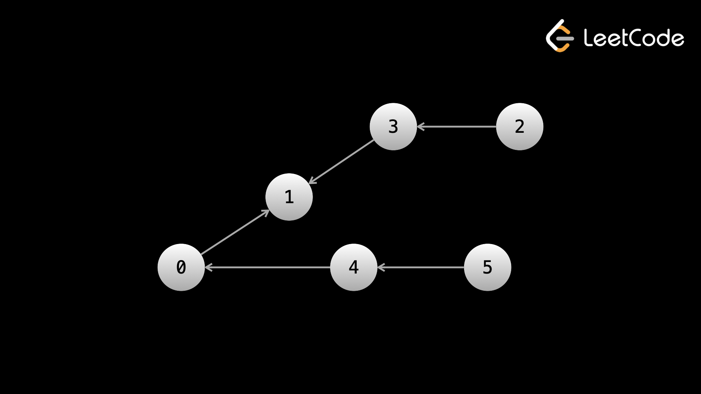

Пример 1: Количество провинций
Имеется n городов. Провинция — это группа прямо или косвенно связанных городов и никаких других
городов за
пределами группы. Вам дана матрица isConnected размера n x n, где
isConnected[i][j] = isConnected[j][i] = 1,
если i-тый город и j-ый город напрямую связаны, в противном случае isConnected[i][j] = 0.
Вернуть общее
количество провинций.
Если вы новичок, мы рекомендуем щелкнуть ссылку на проблему и открыть ее на другой вкладке для всех проблем
в этой статье, чтобы вы могли увидеть примеры тестовых примеров и все связанные с ними изображения. Вы также
должны быть знакомы с такой терминологией графов, как «связные компоненты». Ознакомьтесь с терминологией в
статье «Графы» или откройте ее на другой вкладке, если вы еще с ней не знакомы.
Мы видим, что это неориентированный граф, где граф задан как матрица смежности, и проблема заключается в количестве компонентов связности. Мы можем рассматривать каждый город как узел, а каждый связанный компонент — как провинцию.
Поскольку граф неориентированный, DFS из любого узла будет посещать каждый узел связного компонента, которому он принадлежит. Чтобы избежать циклов с неориентированными графами, нам нужно использовать set seen, чтобы отслеживать, какие узлы мы уже посетили. После выполнения DFS для подключенного компонента все узлы этого компонента будут внутри seen (поскольку DFS будет посещать каждый узел в компоненте). Таким образом, мы можем выполнять итерацию от 0 до n, и каждый раз, когда мы находим узел, который еще не был посещен, мы знаем, что у нас также есть компонент, который еще не был посещен, поэтому мы выполняем DFS, чтобы «пометить» компонент как посещенный и увеличиваем наш ответ. Использование set не позволит нам посчитать один и тот же компонент более одного раза.
Для удобства мы можем преобразовать матрицу смежности в хеш-карту, которая перед запуском сопоставляет узлы с массивом их соседей.
В зависимости от языка, который вы используете, если ваши ключи четко определены (например, целые числа от 0 до n - 1), возможно, лучше использовать boolean array вместо set для реализации seen.
Нам говорят, что существует n городов, некоторые из которых связаны между собой.
Мы можем рассматривать каждый из городов как узел, где каждый город помечен от 0 до n – 1.
Связи (ребра) нам даны на входе. Прежде чем начать какой-либо обход, мы можем сначала построить graph, чтобы мы могли легко получить доступ к соседям любого заданного узла. Если вы впервые решаете задачи с графами, не волнуйтесь. Это стандартный первый шаг, и код, используемый для его выполнения, во всех задачах очень похож. Мы перебираем все пары городов (i, j), и если isConnected[i][j] = 1, добавляем ненаправленное ребро между i и j.
Далее, как нам считать провинции? В провинции вы можете начать с любого города и найти путь, ведущий в любой другой город. Это означает, что они образуют связный компонент.
В неориентированном графе обход данного узла будет посещать каждый node в node связного компонента, которому принадлежит. Это свойство, которое вы можете запомнить, но оно также имеет смысл, если вы об этом подумаете. Помните, что в двоичном дереве, если вы выполняете обход, начиная с корня, вы посещаете каждый узел дерева.
Зная, что DFS будет посещать каждый узел подключенного компонента, мы можем использовать структуру данных seen, чтобы показать, какие города мы уже посетили. Это еще одна стандартная идея во всех задачах с графами, позволяющая избежать многократного посещения узла. Когда мы выполняем обход и находимся в данном node, мы перебираем соседей. Для каждого neighbor мы сначала проверяем, был ли он посещен. Если да, мы игнорируем его. Если это не так, мы отмечаем его как посещенный в seen, а затем рекурсивно вызываем dfs(neighbor) (точно так же, как мы это делали с двоичными деревьями).
Мы перебираем города, и если мы находим город i, который еще не посещен, мы можем выполнить DFS, начиная с i. Как мы знаем, этот обход посетит каждый узел связного компонента, который принадлежит к i (то есть провинции, к которой i принадлежит). После обхода, seen будет обновлен со всей провинции. Мы можем увеличить ответ, и нам больше не нужно беспокоиться о провинции, которую мы только что посетили, потому что seen не позволит нам повторно посетить ее.
from collections import defaultdict
class Solution:
def findCircleNum(self, isConnected: List[List[int]]) -> int:
def dfs(node):
for neighbor in graph[node]:
# the next 2 lines are needed to prevent cycles
if neighbor not in seen:
seen.add(neighbor)
dfs(neighbor)
# build the graph
n = len(isConnected)
graph = defaultdict(list)
for i in range(n):
for j in range(i + 1, n):
if isConnected[i][j]:
graph[i].append(j)
graph[j].append(i)
seen = set()
ans = 0
for i in range(n):
if i not in seen:
# add all nodes of a connected component to the set
ans += 1
seen.add(i)
dfs(i)
return ans
Давайте быстро поговорим о реализации кода и о том, чем реализация DFS здесь отличается от деревьев. Как упоминалось ранее, в случае деревьев нам предоставляются объекты, представляющие узлы. Здесь узлы нам точно не даны. Нам просто говорят, что существуют некоторые узлы с номерами от 0 до n — 1, и сообщают информацию о ребрах.
Таким образом, мы рассматриваем целые числа из [0, n - 1] как узлы. Вот почему наша функция dfs(node) принимает целое число в качестве аргумента. В случае с деревьями мы передавали объект узла в качестве аргумента. Здесь мы передаем целочисленную метку узла. Это концепция, которую вам нужно будет освоить: в случае с графами граф «существует» только как идея. Вам предстоит реализовать метод представления узлов и ребер и обхода по ним. К счастью, в большинстве задач на графах узлы помечены [0, n — 1], поэтому мы можем повторно использовать большую часть логики между задачами.
Если вы хотите реализовать DFS итеративно, вы можете просто изменить функцию dfs, оставив все остальное без изменений. Как и в случае с двоичными деревьями, для выполнения обхода мы используем стек. На каждой итерации цикла while мы извлекаем node из стека, а затем эта итерация эквивалентна вызову функции с node в качестве аргумента.
def dfs(start):
stack = [start]
while stack:
node = stack.pop()
for neighbor in graph[node]:
if neighbor not in seen:
seen.add(neighbor)
stack.append(neighbor)
Временная сложность DFS на графе немного отличается от временной сложности в двоичном дереве. В вопросах о бинарном дереве мы утверждали, что каждый узел посещается не более одного раза, и стоимость каждого посещения О(1). В графах мы также посещаем каждый узел не более одного раза, но это не обязательно O(1), потому что существует цикл for, который перебирает соседей узла.
Таким образом, временная сложность DFS на графах обычно равна O(n+e), где n - количество узлов и e — количество ребер. В худшем случае, когда каждый узел связан с каждым другим узлом, е=n2 (n в квадрате)
Это похоже на аргумент, который мы привели в статье о скользящем окне, оправдывая Временную сложность O(n), несмотря на вложенный цикл while. Вложенный цикл while может повторяться только n раз по всему алгоритму. Здесь цикл for внутри функции выполняет итерацию всего в e раз по всему алгоритму.
Технически в этой задаче временная сложность равна О(n2), поскольку входные данные задаются в виде матрицы смежности, поэтому нам всегда нужно О(n2), чтобы построить хеш-карту. В e преобладает n2 (потому что О(е меньше n2)), поэтому на это можно не обращать внимания.
А как насчет занимаемого пространства? Когда мы строим graph, мы сохраняем все ребра в массивах. Нам также нужно немного места для стека вызовов рекурсии ( O(n) в худшем случае), а также для seen. Следовательно, занимаемое пространство равно О(n+е).
Пример 2: Количество островов
Дана двумерная двоичная сетка размером m x n, которая представляет собой карту 1 (суша) и 0 (вода),
верните количество островов. Остров окружен водой и образуется путем соединения соседних ячеек суши по
горизонтали или вертикали.
Как упоминалось ранее, граф можно представить в виде матрицы, где квадраты — это узлы, а их соседи — соседние квадраты. В этой задаче говорится, что земля соединена горизонтально (слева/справа) или вертикально (вверх/вниз). Мы можем думать о каждом квадрате земли как об узле, а отношения вверх/вниз/влево/вправо образуют края. Проблема заключается в том, чтобы указать количество островов, то есть количество связанных компонентов.
Кажется, эта проблема очень похожа на предыдущую. По сути, это та же самая задача (найти количество связанных компонентов в неориентированном графе), только формат графа другой. Давайте воспользуемся тем же алгоритмом, но реализованным в соответствии с этим новым форматом.
Матрица — это очень распространенная форма графа. Мы рассматриваем каждую ячейку суши как узел, а ребра определяются описанием задачи.
В нем говорится, что остров образуется путем соединения соседних ячеек суши по горизонтали или по вертикали. Следовательно, две земельные ячейки имеют общее ребро, если они соседние. Для узла в (row, col) соседи находятся в (row - 1, col), (row, col - 1), (row + 1, col), (row, col + 1), (если в границах)
На острове вы можете начать с любой клетки суши и добраться до любой другой клетки суши. Мы только что видели ту же самую идею в предыдущей задаче: остров похож на провинцию.
Мы определили, что это одна и та же задача — найти количество островов = найти количество связных компонентов. Единственное, что изменилось, — это формат, в котором входные данные предоставляют нам график.
В коде у нас есть несколько инструментов, которые помогут реализовать алгоритм. Сначала мы объявляем массив directions = [(0, 1), (1, 0), (0, -1), (-1, 0)], который содержит дельты координат для перемещения в четырех направлениях. Это делает код чище при переборе соседей. Далее мы используем вспомогательную функцию valid, которая проверяет, находится ли квадрат в границах и является ли островом. Хотя эти инструменты и не обязательны, они делают код более чистым и модульным.
class Solution:
def numIslands(self, grid: List[List[str]]) -> int:
def valid(row, col):
return 0 <= row < m and 0 <= col < n and grid[row][col] == "1"
def dfs(row, col):
for dx, dy in directions:
next_row, next_col = row + dy, col + dx
if valid(next_row, next_col) and (next_row, next_col) not in seen:
seen.add((next_row, next_col))
dfs(next_row, next_col)
directions = [(0, 1), (1, 0), (0, -1), (-1, 0)]
seen = set()
ans = 0
m = len(grid)
n = len(grid[0])
for row in range(m):
for col in range(n):
if grid[row][col] == "1" and (row, col) not in seen:
ans += 1
seen.add((row, col))
dfs(row, col)
return ans
И итерационная функция DFS:
def dfs(start_row, start_col):
stack = [(start_row, start_col)]
while stack:
row, col = stack.pop()
for dx, dy in directions:
next_row, next_col = row + dy, col + dx
if valid(next_row, next_col) and (next_row, next_col) not in seen:
seen.add((next_row, next_col))
stack.append((next_row, next_col))
Некоторые различия в коде: нас интересуют только квадраты со значением «1» (земля). Мы можем определить вспомогательную функцию valid, которая сначала проверяет, находится ли данная (row, col) в границах, а затем проверяет, находится ли она на суше. Мы также можем объявить массив directions, что сделает перебор четырех соседей более чистым (это очень распространенная практика).
Примечание: мы можем избежать использования set здесь, изменив входные данные. Суть set в том, чтобы не посещать одну и ту же площадь несколько раз. Мы посещаем только квадраты со значением «1», поэтому вместо помещения квадрата в set мы можем просто изменить значение этого квадрата на «0». Однако некоторые интервьюеры могут не захотеть, чтобы вы изменяли входные данные (особенно, если это что-то, передаваемое по ссылке, например массив).
Ранее мы говорили, что DFS на графе имеет временную сложность O(узлы+ребра). Это произошло потому, что мы не знали, сколько ребер может иметь данный узел. Однако здесь проблема явно определяет, что узел может иметь (максимум) 4 ребра. Таким образом, работа, совершаемая в каждом узле O(1), и поскольку мы посещаем каждый узел только один раз, временная сложность равна числу узлов, то есть О(m⋅n).
Пример 3: Измените
порядок маршрутов, чтобы все пути вели к нулевому городу
Существует n городов с номерами от 0 до n-1 и n-1 дорог,
так что между двумя разными городами можно
добраться только одним способом. Дороги представлены connections, где connections[i] =
[x, y]
представляют
собой дорогу из города x в город y. Края направлены. Вам нужно поменять
направление некоторых ребер так,
чтобы каждый город мог достичь города 0. Верните минимальное необходимое количество
перестановок.

Формат этого графика фактически соответствует техническому определению дерева, где 0 является корнем. Это типично, когда в задаче указано, что имеется n узлов и n–1 ребер.
Здесь у нас есть ориентированный граф, заданный как массив ребер. Какие ребра нам нужно поменять местами? Задача гласит, что существует только один способ путешествовать между двумя разными городами. Мы хотим, чтобы каждый город мог добраться до 0, а поскольку между городами есть только одна дорога, все дороги должны быть направлены в сторону 0. Это означает, что мы можем двигаться от 0, и каждый раз, когда мы видим, что ребро направлено в сторону от , мы хотим, чтобы каждый город мог добраться до 0, мы знаем, что нам нужно его поменять.
Хотя граф является ориентированным, давайте преобразуем его в неориентированный, чтобы мы могли достичь всех узлов, начиная с 0. Затем мы можем выполнить DFS, начиная с 0. Поскольку наше направление обхода отличается от 0, в каждом node, в каждом переходе к neighbor, который еще не был посещен, будет далек от 0. Следовательно, если (node, neighbor) находится в connections, мы знаем, что нам нужно поменять эту дорогу. Чтобы иметь быстрый O(1) проверяя, находится ли данное ребро в connections, мы можем поместить исходные направленные ребра в набор дорог.
Поскольку существует только один способ путешествовать между любыми двумя городами (в задаче это явно указано), единственный способ, которым каждый город может достичь 0, — это если направление каждого ребра направлено к 0. Это означает, что нам нужно идентифицировать все ребра, которые направлены в сторону от 0.
Допустим, мы запускаем DFS с 0. Поскольку мы используем seen для предотвращения повторного посещения узлов, мы всегда будем отходить от 0 (поскольку мы начали с него).
Если мы находимся в узле A и переходим к узлу B, мы знаем, что ребро A -> B должно быть направлено от 0. Мы можем поместить все ребра из входных данных в set, а затем, когда мы выполним обход, мы проверяем, находится ли каждый краевой node -> neighbor в set. Если node -> neighbor находится в наборе, это означает, что он был в исходном вводе, и, поскольку он указывает в сторону от 0, мы должны увеличить наш ответ, поскольку это ребро, которое необходимо перевернуть. Причина, по которой мы помещаем исходные ребра в набор, заключается в том, что эту проверку можно выполнить за О(1).
Единственная проблема заключается в том, что, поскольку ребра направлены, запуск DFS с 0, скорее всего, не будет посещать каждый узел. Чтобы исправить это, когда мы строим graph на основе входных данных (как в первом примере), мы можем рассматривать ребра как ненаправленные. Это сделано исключительно для того, чтобы мы могли выполнить DFS, начиная с 0.
Затем мы запускаем DFS с 0, и каждый node -> neighbor, с которым мы сталкиваемся и которое находится в исходных входных данных, должно быть перевернуто.
Примечание. В C++ мы используем set вместо unordered_set. Это позволяет нам использовать изменяемые элементы, но взамен временная сложность операций снижается до O(logn) вместо О(1). Это сделано для упрощения кода; ты мог бы достичь Сложность O(1) за счет использования unordered_set и преобразования пар в неизменяемую форму, как в Java.
roads = set()
graph = defaultdict(list)
for x, y in connections:
graph[x].append(y)
graph[x].append(y)
roads.add((x, y))
def dfs(node):
ans = 0
for neighbor in graph[node]:
if neighbor not in seen:
if (node, neighbor) in roads:
ans += 1
seen.add(neighbor)
ans += dfs(neighbor)
return ans
seen = {0}
return dfs(0)
Итеративная версия этого алгоритма:
roads = set()
graph = defaultdict(list)
for x, y in connections:
graph[x].append(y)
graph[y].append(x)
roads.add((x, y))
ans = 0
stack = [0]
seen = {0}
while stack:
node = stack.pop()
for neighbor in graph[node]:
if neighbor not in seen:
if (node, neighbor) in roads:
ans += 1
seen.add(neighbor)
stack.append(neighbor)
return ans
Временная и пространственная сложность этого алгоритма равна O(n), потому что мы посещаем каждый узел только один раз, выполняем постоянную работу и нам говорят, что количество ребер равно n−1=O(n). roads, graph и seen занимают максимум O(n) пространство.
Пример 4: 841. Ключи и комнаты.
Есть n комнат, отмеченных цифрами от 0 до n - 1, и все комнаты, кроме
комнаты 0, заперты. Ваша цель —
посетить все комнаты. Когда вы посещаете комнату, вы можете найти в ней набор разных ключей. На каждом ключе
есть номер, обозначающий, какую комнату он открывает, и вы можете взять их все с собой, чтобы открыть другие
комнаты. Дан массив rooms, где rooms[i] — это набор ключей, которые вы можете
получить, если вы
посетили комнату i, верните true, если вы можете посетить все комнаты, или false в противном
случае.
В предыдущих трех примерах мы видели граф, заданный в виде матрицы смежности, граф в форме матрицы и граф, представленный в виде массива ребер. Здесь rooms[i] — это массив других комнат, которые мы можем посетить из текущей комнаты, что представляет собой график, представленный в виде списка смежности. Мы начинаем с комнаты 0 и нам нужно посетить каждую комнату. В каждом узле i соседями являются rooms[i]. Если мы сможем запустить DFS с 0 и посетить каждый узел, тогда ответ верен. Как мы можем узнать, сколько комнат мы посетили в конце DFS? Все узлы, которые мы посетили, хранятся в файле seen.
Все комнаты, кроме 0, заперты. Это означает, что мы можем начать с 0. Когда мы посещаем комнату, мы находим ключи, которые позволяют нам посещать другие комнаты. Это говорит нам о том, что мы можем смоделировать проблему в виде графа. Комнаты — это узлы, а ключи — это края.
Вход графа самый удобный — список смежности. Нам не нужно строить graph, как в предыдущих примерах, потому что входные данные уже выполняют эту функцию — если мы хотим найти соседей данного узла i, мы можем просто проверить rooms[i].
Проблема в том, сможем ли мы посетить все комнаты. Это эквивалентно «запуску DFS с 0, можете ли вы посетить все узлы?».
Поэтому мы просто запускаем DFS с 0 и проверяем, посетили ли мы все узлы после завершения обхода. Поскольку мы добавляем узел к seen каждый раз, когда посещаем его, мы можем просто сравнить размер seen с n (который представляет собой длину rooms, поскольку входные данные представляют собой список смежности).
def dfs(node):
for neighbor in rooms[node]:
if neighbor not in seen:
seen.add(neighbor)
dfs(neighbor)
seen = {0}
dfs(0)
return len(seen) == len(rooms)
Итеративно:
seen = {0}
stack = [0]
while stack:
node = stack.pop()
for neighbor in rooms[node]:
if neighbor not in seen:
seen.add(neighbor)
stack.append(neighbor)
return len(seen) == len(rooms)
Списки смежности — наиболее удобный формат ввода, когда узлы пронумерованы от 0 до n — 1, потому что нам не нужно конвертировать их в хеш-карту — по сути, они уже есть в этом формате. Таким образом, единственное дополнительное пространство, которое мы здесь используем, — это seen и стек рекурсивных вызовов, которые оба являются О(n). Временная сложность равна O(n+e), поскольку мы посещаем каждый узел один раз, а циклы for внутри каждого посещения будут выполнять итерацию всего в e раз по всему алгоритму.
Пример 5: 1557.
Минимальное количество вершин для достижения всех узлов.
Дан направленный ациклический граф с n вершинами, пронумерованными от 0 до
n-1, и массивом edges, где edges
[i] = [x, y] представляют направленное ребро от узла x к узлу y.
Найдите наименьший набор вершин, из
которого достижимы все узлы графа.
Задача требует наименьшего набора узлов, из которого можно получить доступ ко всем остальным узлам. Это можно перефразировать как наименьший набор узлов, к которому невозможно получить доступ из других узлов, потому что, если к узлу можно добраться из другого узла, то мы предпочли бы просто включить в наш набор «родительский», а не «дочерний» узел.
К узлу невозможно добраться из другого узла, если его степень входа равна 0 (в узел не входят ребра). Следовательно, мы можем просто найти входную степень всех узлов и включить только те, у которых входная степень равна нулю.
Примечание. Этот алгоритм работает, поскольку граф представляет собой ориентированный ациклический граф (DAG). Если бы в графе был цикл, скажем, он просто образовал круг, то не было бы узлов с входной степенью 0, но нам все равно нужно было бы включить хотя бы один узел.
indegree = [0] * n
for _, y in edges:
indegree[y] += 1
return [node for node in range(n) if indegree[node] == 0]
Этот пример не требует DFS, но является хорошим упражнением для лучшего понимания механики графиков. Это все примеры, которые мы рассмотрим в этой статье — попробуйте решить предстоящие практические задачи самостоятельно, прежде чем переходить к BFS.